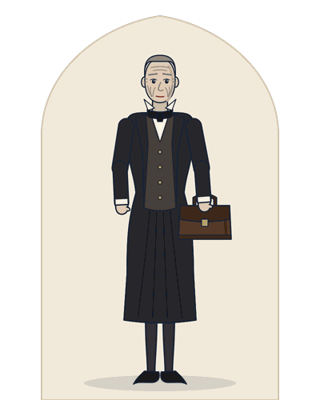
Mr Utterson
A London lawyer, “lean, long, dusty, dreary and yet somehow lovable.” (1.1). He is Dr Jekyll’s old friend and keeps his will. The narrator stays close to him, and the reader follows his search.
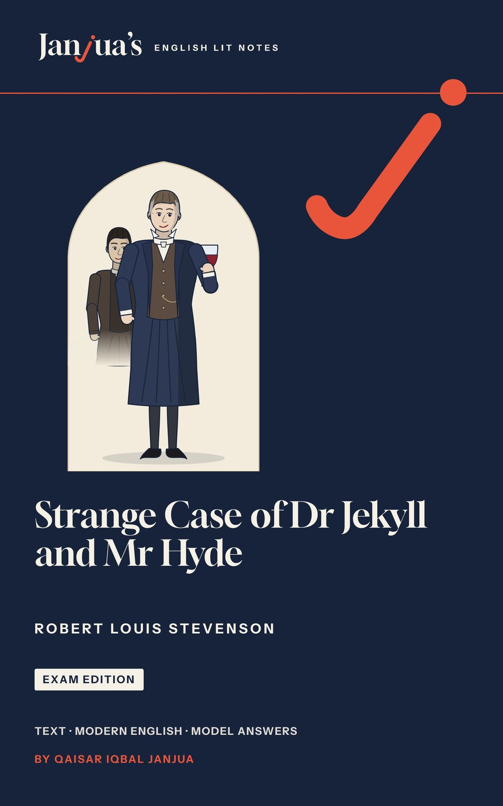
Strange Case of Dr Jekyll and Mr Hyde is Robert Louis Stevenson’s story of Mr Utterson, a London lawyer, who sets out to learn why his friend Dr Jekyll has left everything in his will to the violent Mr Hyde. This Jekyll and Hyde study guide gives you the whole story, chapter by chapter, with a plain modern English paragraph after every paragraph of Stevenson, 11 units, and the answers examiners look for.
The book is being prepared for Amazon now. Send one short email and you will hear as soon as it is out.
Email me when it is outThis opens your email app with a short message to qaisar@janjuaslitnotes.com already written: just press Send. Your email address is used only to tell you when this book is out. How your email is used.
Strange Case of Dr Jekyll and Mr Hyde is a mystery in ten chapters: a London lawyer, Mr Utterson, follows the trail of Mr Hyde, the stranger named in his friend Dr Jekyll’s will. Here is the story chapter by chapter, as the book sums it up. Like the book’s own summary, it stops at the broken door of chapter eight and does not tell the secret.
Mr Utterson, a London lawyer, takes a Sunday walk with his kinsman Mr Enfield. They pass a shabby door, and Enfield tells a story about it. One black winter morning a man “trampled calmly over the child’s body” (1.8). Enfield and the others made him pay “a hundred pounds” (1.8) to the girl’s family. He went in at that door and came out with gold and another man’s cheque. His name was Hyde (1.20). Mr Utterson already knows the name on the cheque: “your tale has gone home.” (1.25).
That evening Mr Utterson reads the will of his friend Dr Jekyll. It leaves everything to his “friend and benefactor Edward Hyde” (2.1). It gives Hyde the same on the doctor’s “disappearance or unexplained absence for any period exceeding three calendar months” (2.1). Dr Lanyon, an old friend of both men, has never heard of Hyde (2.11). So the lawyer watches the door: “I shall be Mr. Seek.” (2.15). One night he meets Hyde, who is “pale and dwarfish” (2.37). The door is a back way into Dr Jekyll’s own house, and “Mr. Hyde has a key.” (2.43).
A fortnight later Mr Utterson stays behind after one of the doctor’s dinners (3.1). He says that he has heard bad things of Hyde. Dr Jekyll turns pale, but he will not explain. He says “the moment I choose, I can be rid of Mr. Hyde.” (3.11). Then he asks the lawyer to help Hyde one day, and Mr Utterson promises (3.17).
The murder comes “Nearly a year later, in the month of October, 18—” (4.1). A maid at her window sees Mr Hyde meet an old gentleman in a lane. Suddenly Hyde “clubbed him to the earth” (4.1) with a heavy cane. Mr Utterson names the dead man as “Sir Danvers Carew.” (4.4). He also knows the broken stick, his own gift to Dr Jekyll long ago (4.6). He leads Inspector Newcomen to Hyde’s rooms in Soho, but Hyde has gone.
Late in the afternoon Mr Utterson finds Dr Jekyll “looking deadly sick.” (5.1). Dr Jekyll hands over a letter signed by Hyde. But Poole, the butler, is “positive nothing had come except by post” (5.20). Mr Guest, the lawyer’s head clerk, sets the letter beside a note from Dr Jekyll. The two hands are alike, “only differently sloped.” (5.33). Mr Utterson thinks “Henry Jekyll forge for a murderer!” (5.38).
Hyde vanishes, and “for more than two months, the doctor was at peace.” (6.1). Then his door is shut again (6.2). Mr Utterson finds Dr Lanyon dying: “I have had a shock” (6.4). Lanyon will not hear Jekyll’s name. Dr Jekyll writes that he must live alone, and he asks his friend “to respect my silence.” (6.11). Dr Lanyon dies and leaves a sealed paper. An inner cover says “not to be opened till the death or disappearance of Dr. Henry Jekyll.” (6.12). The lawyer locks it away unread.
On another Sunday walk Mr Utterson and Mr Enfield step into the court behind the door. Dr Jekyll sits at a window “like some disconsolate prisoner” (7.6). Then his smile gives way to “an expression of such abject terror and despair” (7.12). The window shuts, and the two men walk away without a word.
One March night Poole comes to the lawyer: “Mr. Utterson, sir, I’m afraid.” (8.5). He has been afraid “for about a week” (8.7). A voice in the cabinet refuses to see anyone, and Poole asks “Was that my master’s voice?” (8.29). The two men break the door with an axe (8.71). Inside lies a dead man, and they see “the face of Edward Hyde.” (8.73). They search the building, but “Nowhere was there any trace of Henry Jekyll, dead or alive.” (8.75). On the table lie a new will in Mr Utterson’s name, a note and a sealed packet.
Two documents are still unread: Dr Lanyon’s paper and the sealed packet. Mr Utterson goes home “to read the two narratives in which this mystery was now to be explained.” (8.99). Chapters nine and ten are those two documents, and they give the answer.
Stevenson wrote the novel at Bournemouth in the autumn of 1885, and the story began in a dream. Longmans, Green and Co. published it in London in January 1886, at one shilling. The story has ten chapters, which Stevenson titled and did not number, and 339 numbered paragraphs.
11 units, over the ten chapters, then the essays and the revision. Every unit follows the same plan, so you always know where to look.
The text is that of the first edition (Longmans, Green and Co., London, 1886), with obvious misprints corrected. Every quotation and paragraph number in the book is checked against it. The book numbers the ten chapters and every paragraph of the story, 339 in all, and every quotation carries chapter and paragraph: 2.15 means chapter two, paragraph 15.
Paperback, 6 x 9 in, 339 pages, and a Kindle ebook.
Available on Amazon
Chapters One and Two (Units 1 and 2), complete, with the title page, the copyright page, a page on how to read the sample and the keys to the objective questions.
Every paragraph of Stevenson has a plain modern English paragraph after it, and the hard words are explained after the passage. This is the moment Mr Utterson asks the name of the man in Enfield’s story, as the book prints it.
“If you have opened this book, you probably have an exam coming, and a short novel that schools everywhere set. Strange Case of Dr Jekyll and Mr Hyde is a mystery. A careful London lawyer fears for an old friend. A stranger whom people dislike on sight seems to hold some power over that friend. The novel is short, ten chapters in all, and it is full of famous lines. Its questions about secrecy, fear and a good name are still argued today. None of it needs to frighten you. You need to know what is happening, why the characters act as they do, and how to write about it well.”
The name of Hyde Chapter One · Paragraphs 19 to 22
“But for all that,” continued the lawyer, “there’s one point I want to ask. I want to ask the name of that man who walked over the child.”
“But for all that,” the lawyer went on, “there is one point I want to ask. I want to ask the name of that man who walked over the child.”
“Well,” said Mr. Enfield, “I can’t see what harm it would do. It was a man of the name of Hyde.”
“Well,” said Mr Enfield, “I cannot see what harm it would do. It was a man called Hyde.”
“Hm,” said Mr. Utterson. “What sort of a man is he to see?”
“Hm,” said Mr Utterson. “What sort of man is he to look at?”
“He is not easy to describe. There is something wrong with his appearance; something displeasing, something down-right detestable. I never saw a man I so disliked, and yet I scarce know why. He must be deformed somewhere; he gives a strong feeling of deformity, although I couldn’t specify the point. He’s an extraordinary looking man, and yet I really can name nothing out of the way. No, sir; I can make no hand of it; I can’t describe him. And it’s not want of memory; for I declare I can see him this moment.”
“He is not easy to describe. There is something wrong with his appearance, something unpleasant, something downright hateful. I never saw a man I disliked so much, and yet I hardly know why. He must be deformed somewhere. He gives a strong feeling of deformity, although I could not say where. He is an extraordinary looking man, and yet I really can name nothing unusual. No, sir, I cannot manage it. I cannot describe him. And it is not for lack of memory, for I declare I can see him this moment.”
Words22 deformity: a wrongly shaped part of the body
The book has 11 units over the ten chapters: the two long chapters, eight and ten, are split where the story turns, and two pairs of short chapters share a unit. Each line for Units 1 to 7 is the book’s own summary of the unit. Units 8 to 11 give away the ending, so they are listed here by chapter and place only.
On a Sunday walk Mr Enfield tells Mr Utterson how a strange man trampled a girl and paid with another man’s cheque.
Dr Jekyll’s will leaves everything to Mr Hyde. Mr Utterson watches the door, meets Hyde and fears for his friend.
Dr Jekyll asks Mr Utterson to help Mr Hyde. Nearly a year later, Mr Hyde murders Sir Danvers Carew.
Dr Jekyll, looking very ill, gives Mr Utterson a letter signed by Mr Hyde. Mr Guest then compares two handwritings.
Dr Jekyll shuts his door again, Dr Lanyon dies of a shock, and terror shows at a window.
Poole begs Mr Utterson to come to Dr Jekyll’s house. Someone is shut in the cabinet, and the servants are afraid.
Mr Utterson and Poole break down the cabinet door. They find Mr Hyde dead, no trace of Dr Jekyll, and three papers.
Chapter Nine · Dr Lanyon’s house in Cavendish Square, midnight.
Chapter Ten, paragraphs 1 to 12 · Dr Jekyll’s cabinet, late one night.
Chapter Ten, paragraphs 13 to 20 · Jekyll’s house, then the murder night.
Chapter Ten, paragraphs 21 to 28 · Regent’s Park, then Jekyll’s cabinet.
The story follows Mr Utterson as he searches for the truth about Dr Jekyll and Mr Hyde, with Dr Lanyon, Poole and Mr Guest as his witnesses. The book has eleven drawings in one house style, each made from the words of the novel; here they are with the book’s own notes, which describe each person only as chapters one to eight show him.

A London lawyer, “lean, long, dusty, dreary and yet somehow lovable.” (1.1). He is Dr Jekyll’s old friend and keeps his will. The narrator stays close to him, and the reader follows his search.
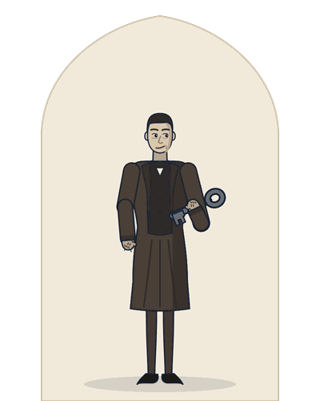
Edward Hyde, the heir named in Dr Jekyll’s will (2.1). He is small and young, and people dislike him on sight: “I never saw a man I so disliked” (1.22).
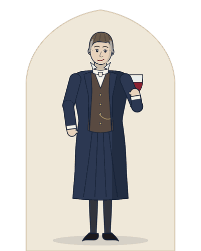
Henry Jekyll, a rich and respected doctor, “a large, well-made, smooth-faced man of fifty” (3.1). He “had always been known for charities” (6.1). His will leaves everything to Mr Hyde.
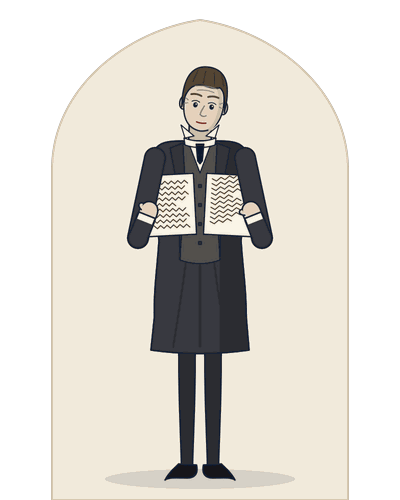
Mr Utterson’s head clerk, “a great student and critic of handwriting” (5.22). He compares the two hands.
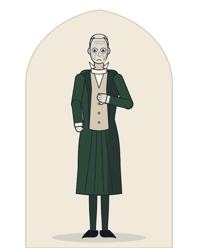
A famous doctor, “a hearty, healthy, dapper, red-faced gentleman” (2.4). He is an old friend of Dr Jekyll and Mr Utterson. He has quarrelled with Dr Jekyll over science.
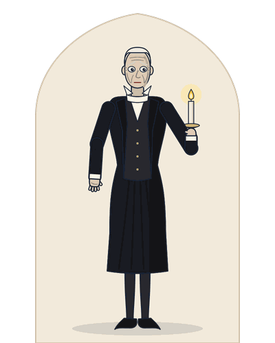
Dr Jekyll’s butler, “A well-dressed, elderly servant” (2.38). He has known his master for twenty years (8.43). His fear brings Mr Utterson to the house on the last night.
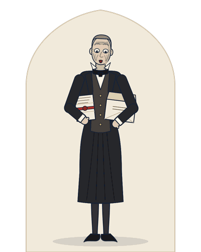
Mr Utterson and Poole break down the cabinet door. They find Mr Hyde dead, no trace of Dr Jekyll, and three papers.
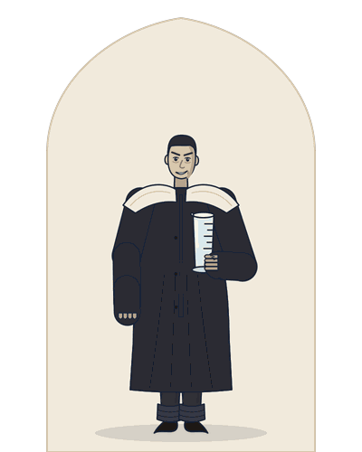
Chapter Nine · Dr Lanyon’s house in Cavendish Square, midnight.
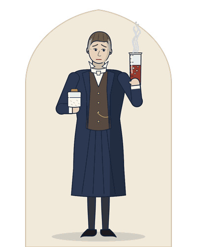
Chapter Ten, paragraphs 1 to 12 · Dr Jekyll’s cabinet, late one night.
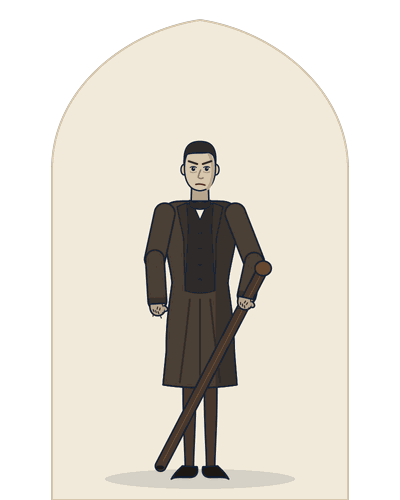
Chapter Ten, paragraphs 13 to 20 · Jekyll’s house, then the murder night.
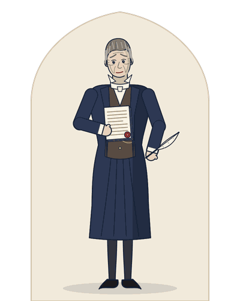
Chapter Ten, paragraphs 21 to 28 · Regent’s Park, then Jekyll’s cabinet.
These are thirteen of the forty key passages in the book’s passage bank, all from chapters one to eight, each with its speaker, its chapter and paragraph, and what the book says about why it matters.
| Passage | Speaker and paragraph | Why it matters |
|---|---|---|
| “lean, long, dusty, dreary and yet somehow lovable.” | The narrator1.1 | The first portrait of the lawyer: four dull words, then a kind one. |
| “trampled calmly over the child’s body” | Mr Enfield1.8 | The first sight of Mr Hyde: the horror lies in his calm, and the girl lives. |
| “He is not easy to describe.” | Mr Enfield1.22 | The text shows Hyde by his effect; no witness can name what is wrong. |
| “I shall be Mr. Seek.” | Mr Utterson2.15 | A thought, not a speech; it turns the lawyer into a searcher. |
| “Mr. Hyde was pale and dwarfish” | The narrator2.37 | Hyde is small; the fear comes from what cannot be named. |
| “a large, well-made, smooth-faced man of fifty” | The narrator3.1 | The one full portrait of Jekyll: large and kind, with “something of a slyish cast” (3.1). |
| “with ape-like fury, he was trampling his victim under foot” | The narrator4.1 | The murder of Sir Danvers Carew; the weapon is “a heavy cane” (4.1), and no cause is given. |
| “like a district of some city in a nightmare.” | The narrator4.10 | A simile, a comparison using like or as: the fog makes London a bad dream. |
| “I have had a shock” | Dr Lanyon6.4 | He will not say what the shock was; his own letter tells it in chapter nine. |
| “an expression of such abject terror and despair” | The narrator7.12 | The two men see the terror and not its cause; they leave without a word. |
| “Mr. Utterson, sir, I’m afraid.” | Poole8.5 | A steady butler of twenty years admits fear, so the reader fears with him. |
| “It was a wild, cold, seasonable night of March” | The narrator8.14 | Pathetic fallacy, weather or nature made to share a mood: even the sky seems disturbed. |
| “Nowhere was there any trace of Henry Jekyll, dead or alive.” | The narrator8.75 | One man dead and one missing: the door is down, yet the mystery stands. |
The book answers the twelve questions examiners set most often on Jekyll and Hyde with twelve model essays. Each is written in full for long papers, with a marked cut line where a shorter answer can stop. These are the topics:
Four pages as they appear in the book: the title page, a unit card, a page of text with modern English, and a critical note. Select a page to see it larger.
Short, direct answers taken from the Jekyll and Hyde study guide itself.
Yes. It prints the whole novel, all ten chapters, from the first edition (Longmans, Green and Co., London, 1886), in 11 units. Every one of the 339 numbered paragraphs has a plain modern English paragraph after it, and 396 hard words and phrases are explained in word notes after the passages.
Yes. Every paragraph of Stevenson is followed by its meaning in plain modern English: a short paragraph has its modern English directly beneath it, and a long one is followed by its modern English as one paragraph. “If he be Mr. Hyde,” he had thought, “I shall be Mr. Seek.” (2.15), for example, becomes “If he is Mr Hyde,” he had thought, “I shall be Mr Seek.”
The book follows six themes through the story: duality, secrecy, violence, reputation, science and fear. Every point on a unit card carries its theme tag, and each tag leads to the essays that need it; duality, for example, leads to Essay 3, and reputation to Essay 8, on reputation and the Victorian gentleman.
The book has twelve model essays and marks seven of them “Frequently set”: Dr Jekyll, Mr Hyde, duality, fear, horror and suspense, secrecy, silence and mystery, Mr Utterson, and violence. The other five are on reputation, Dr Lanyon and science, the minor characters, setting and the Gothic, and structure. Each essay is written in full for long papers, with a marked cut line where a shorter answer can stop.
Not until you are ready. The novel keeps a secret until chapter nine, and the book warns you where it is told: Units 8 to 11, some essay titles and every sentence marked Looking ahead give away the ending. If the story is new to you, read the whole text first.
Stevenson gave the ten chapters titles and no numbers. This book numbers them one to ten, and numbers every paragraph, so a reference such as (2.15) means chapter two, paragraph 15, and every answer can show where its evidence stands.
In London. The door of the first chapter stands in “a by-street in a busy quarter of London” (1.3), and the text gives no year: it prints “18--” (4.1).
Not always. The book numbers every paragraph of the 1886 text, and every speech counts as one paragraph, however short, so the numbers will not match the pages of your own copy. Find the number in the margin of the book’s text. Examiners name passages by chapter and by their sense, so know each passage by what it says as well as by its number.
The free PDF sample has the title page, the copyright page, a page on how to read the sample and the whole of Chapters One and Two (Units 1 and 2), as they appear in the book.